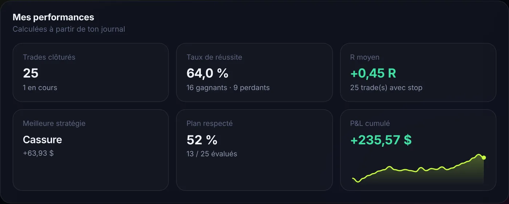
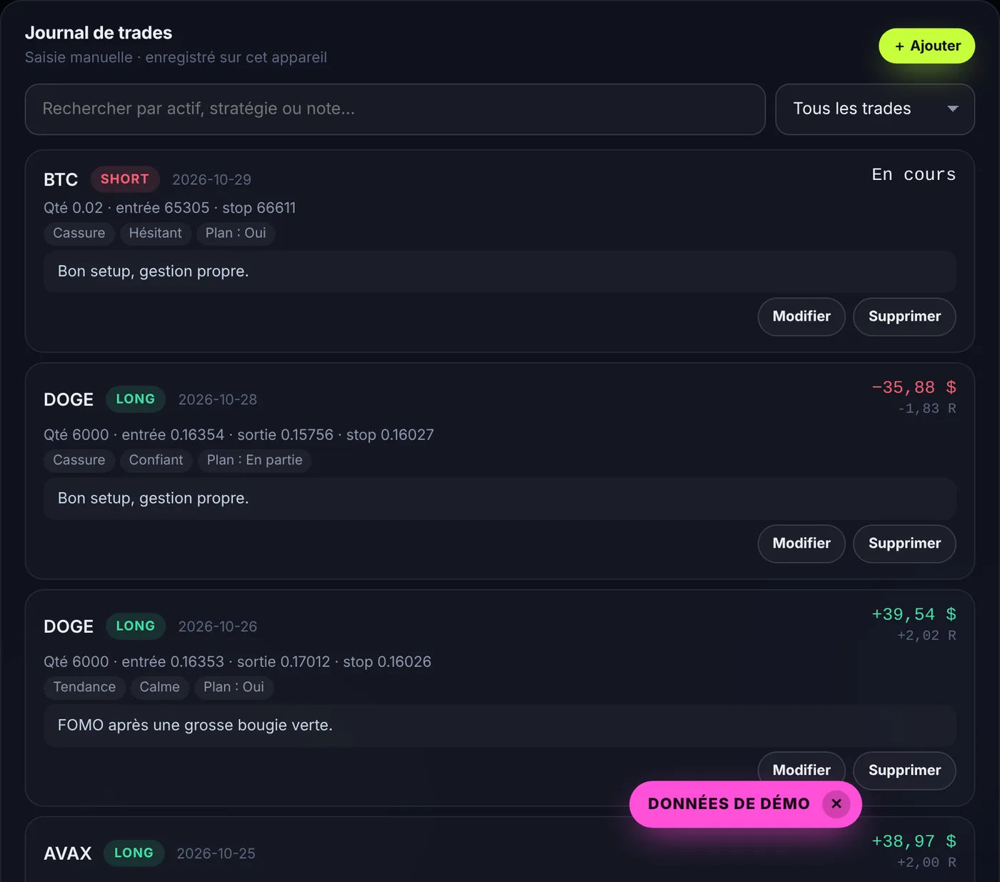
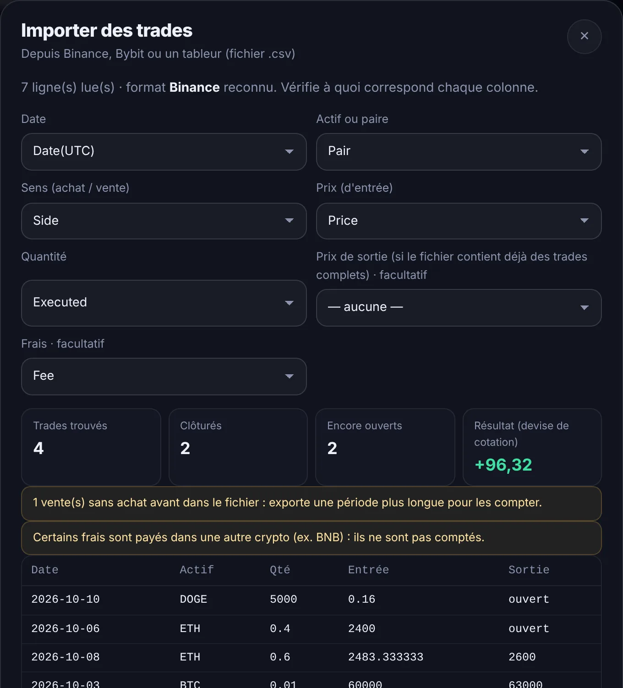
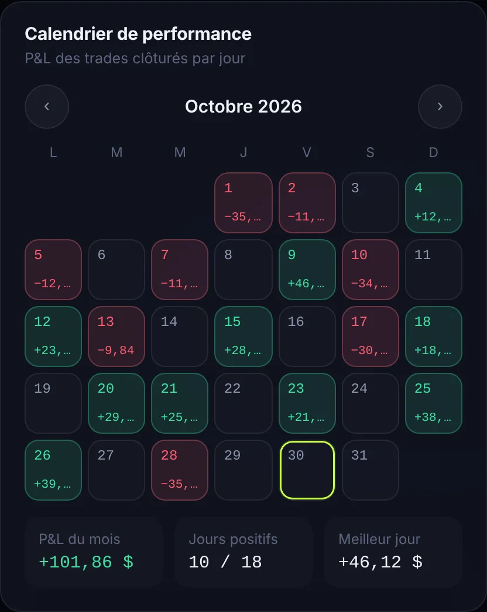
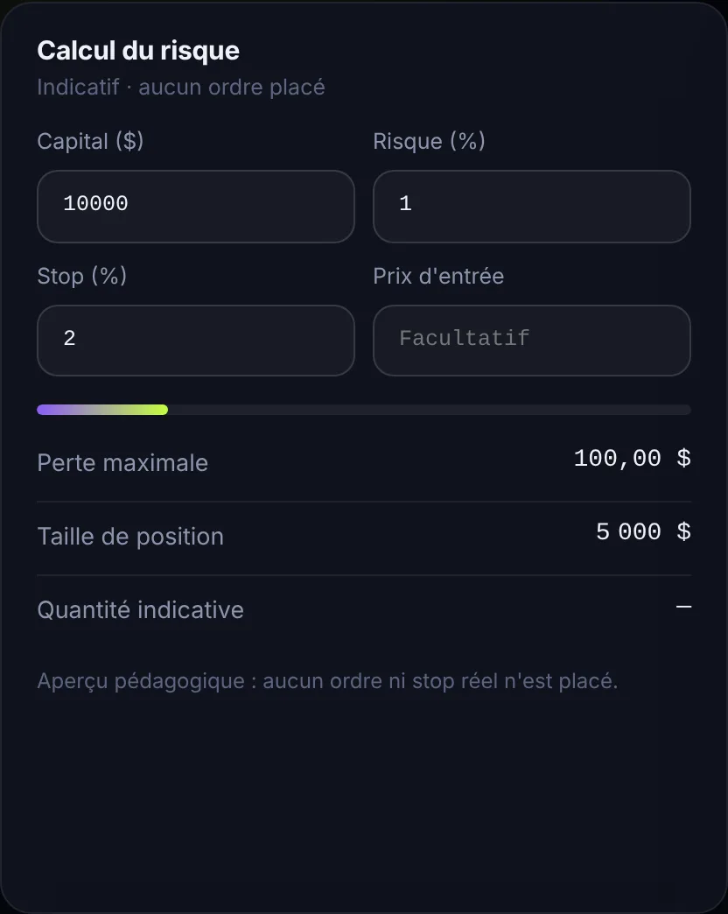
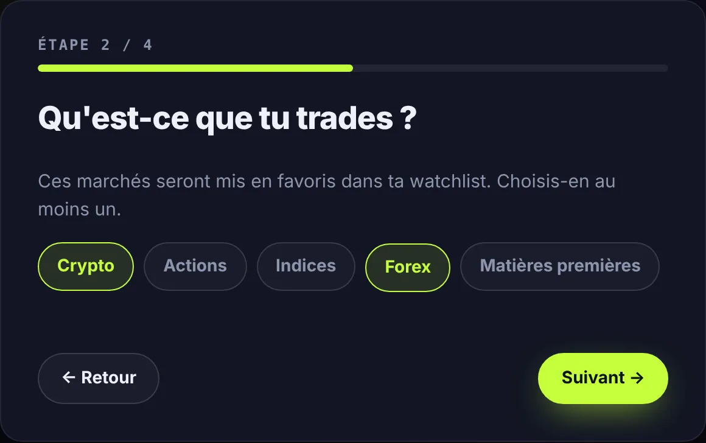
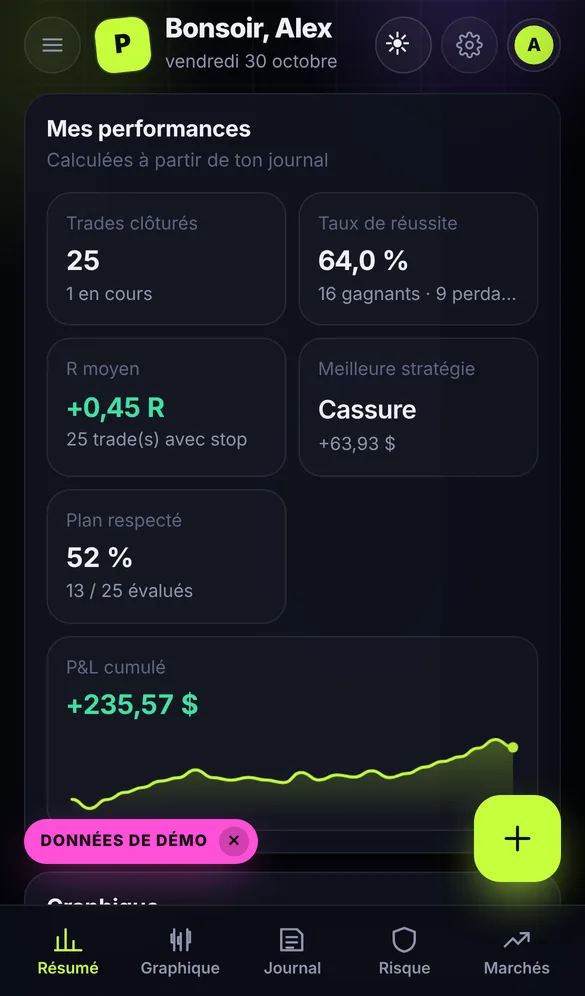
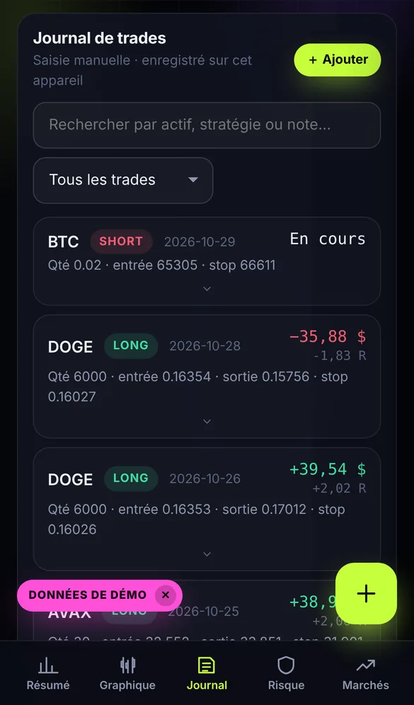
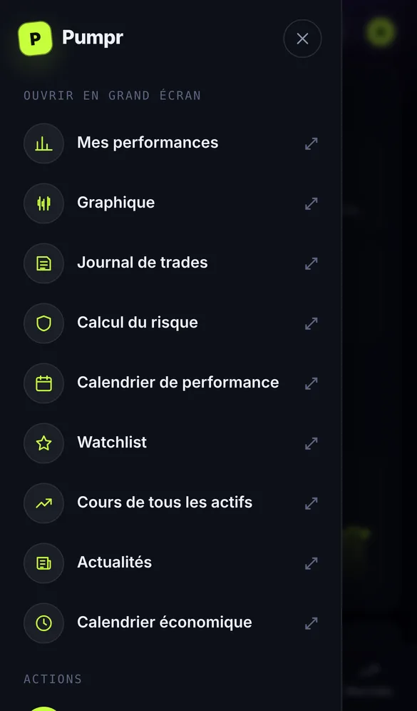

Des captures du vrai desk Pumpr, sur ordinateur et sur téléphone.
Captures réalisées avec des données de démoPumpr calcule tout à partir de ton journal, sans tableur.

Pas juste un prix d'entrée et de sortie : ton émotion, ta stratégie et si tu as suivi ton plan.

Glisse ton export CSV de Binance, Bybit ou de ton tableur : Pumpr reconnaît les colonnes et reconstitue tes trades.

Le calendrier montre ton mois en couleurs. Le calcul du risque te donne la bonne taille avant d'entrer.


Pseudo, niveau, marchés, risque, couleur et modules : quatre questions à la première connexion.

Navigation en bas, bouton + toujours à portée de pouce, menu ☰ pour ouvrir chaque module en plein écran.


